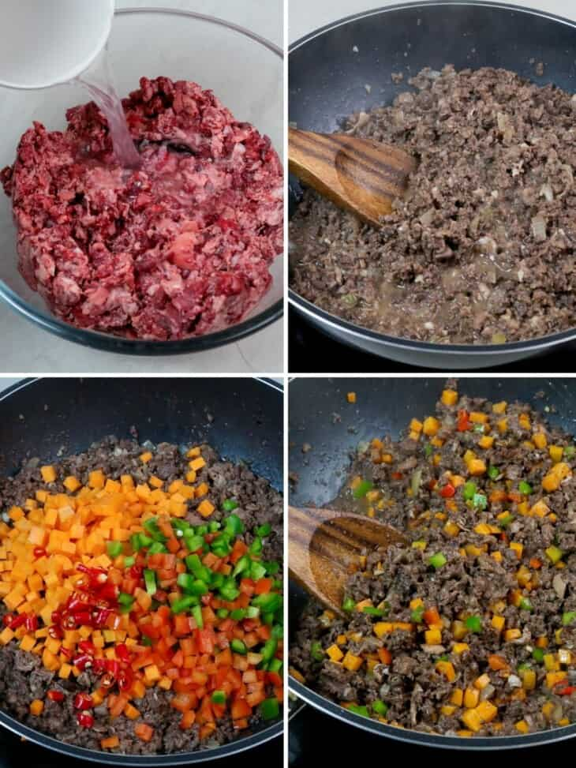

BOPIS

Bopis with minced pork lungs, carrots, and peppers is loaded with big, bold flavors you’ll love! It’s perfect as bar food with an ice-cold beer or a main meal with steamed rice!
What is Bopis
Bopis is a spicy Filipino delicacy made of minced pork lung and heart cooked in onions, garlic, and chili peppers. Popular as an appetizer, it is also commonly served as a main meal entree.
Instructions
- In a bowl, combine minced pork lung (or bopis mix), vinegar, and salt. Marinate for about 10 minutes.
- In a wide skillet over medium heat, heat oil. Add onions and garlic and cook until softened.
- Add fish sauce.
- Add minced pork lungs and bring to a boil. Cook, stirring occasionally, for about 20 to 30 minutes or until liquid is mostly absorbed and meat begins to sizzle.
- Add carrots, bell peppers, and chili peppers. Continue to cook for about 2 to 3 minutes or until vegetables are tender-crisp.

How to serve and store
- Serve as an appetizer with your favorite hard drinks or as a main dish with steamed rice.
- Refrigerate leftovers in a container with a tight-fitting lid for up to 3 days. Reheat in a wide pan, stirring regularly, until heated through.
Ingredients
- 2 pounds minced pork lungs
- 1/2 cup vinegar
- 1 teaspoon salt
- 2 tablespoons canola oil
- 1 onion, peeled and chopped
- 4 cloves garlic, peeled and minced
- 1 tablespoon fish sauce
- 1 large carrot, peeled and diced
- 1/2 green bell pepper, seeded and chopped
- 1/2 red bell pepper, seeded and chopped
- 4 Thai chili peppers, stemmed and chopped